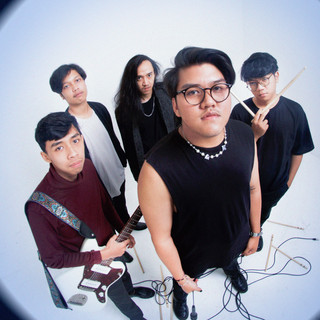

2021
The lineup locks
The band forms in Bandung in late 2021. The note that traveled with the EP names Faza, Rafly, Rayhan, Pancha, and Azmy, and says that formation never changed.
About
What is public is a single, a five-song EP, one named member, and two stages in 2025. An origin story before December 2021 is not online.

Band introduction
Apple Music files the band under pop. Their own description is alternative pop from Bandung. The 2023 cover is split between a page of handwriting and a blue hourglass.
Faza Alif Muhammad is the vocalist and producer, credited from December 2021. The published lineup around him is Rafly on guitar, Rayhan on bass, Pancha on keyboard, and Azmy on drums.
Band history
2021
The band forms in Bandung in late 2021. The note that traveled with the EP names Faza, Rafly, Rayhan, Pancha, and Azmy, and says that formation never changed.
2022
The first single, released 25 March 2022. One song, filed as pop.
2023
On 18 August 2023 the band released the EP. Five tracks, each tied to one feeling: Eve (longing), Tried to Find You (a parting), I Love You but You Not (refusal, then letting go), Sound of Solemn (being alone), and 224 (disappointment). The songs are described as coming from the members’ own romances. Strings and a sharper synth sit on top of the electronic pop from the first single.
2025
Pestipalin on 5 July, Stage B at 12:30. Then Ardan Senja Syahdu Vol. 6 on 30 August at Laswi Heritage, on the Mini Stage.
Genre and base
Highlights
The five players are on the next page. Shows and notes start on Instagram.